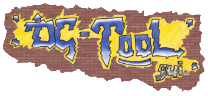

Welcome
in DC-TOOL GUI !
2003-2004 ©reated by[big_fury]SiZiOUS
Sorry, but no english CHM help available!
I'm sorry because i'm french native. So if you can translate the current french help file, i'll like it :)
May be next time...
[big_fury]SiZiOUS
Help not available